Arco d'Augusto (ID Wikidata: Q1072853)
Investigated by Ginevra Mazza
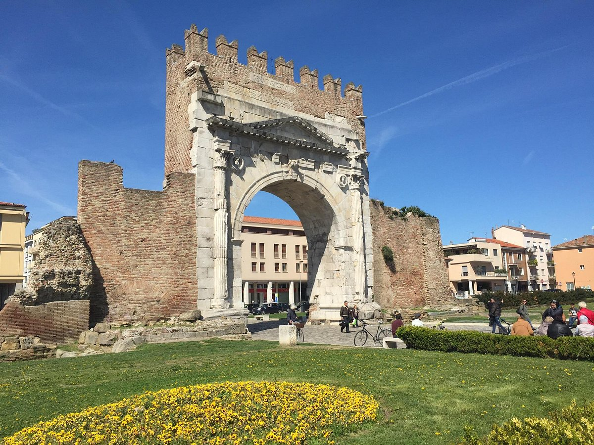
🏛 Why the Arch of Augustus?
The Arch of Augustus in Rimini is a magnificent Roman triumphal arch, built in 27 BC in honor of Emperor Augustus. It is the oldest Roman arch still standing in Italy and marks the end of the Via Flaminia, a crucial Roman road connecting Rimini (ancient Ariminum) to Rome. It is important due to its historical significance as it symbolizes the "Pax Augusta", a period of relative stability and prosperity, and it has become a symbol of Rimini: along with the Ponte di Tiberio, it is an iconic symbol of Rimini and serves as a powerful reminder of the significant role the city had in the Roman Empire.
I decided to enrich its entity by taking the following steps because it is important to maintain its Wikidata profile up-to-date, given its high visibility as an iconic landmark in Rimini and the central role in Rimini's identity and tourism.
🔍 SPARQL queries to detect the gaps
DESCRIBE Query
First of all, I used this query with the DESCRIBE function to see the properties and objects belonging to the Arch of Augustus. I found it useful to see if it is already well described or not, and to see which properties may be missing.
PREFIX wd: <http://www.wikidata.org/entity/>
PREFIX rdfs: <http://www.w3.org/2000/01/rdf-schema#>
PREFIX bd: <http://www.bigdata.com/rdf#>
PREFIX wikibase: <http://wikiba.se/ontology#>
DESCRIBE wd:Q1072853
WHERE {
SERVICE wikibase:label { bd:serviceParam wikibase:language "it,en". }
}
LIMIT 100
By doing so, I noticed that some of the most important properties the entity already has involve the location, Rimini, the image, and the association to the Roman culture. Nevertheless, some other interesting properties beyond those already noticed while investigating the monuments of Rimini in one of the previous queries, can be added, one can be the website or the inscription on the Arch.
SELECT Query
Therefore, I proceed with a SELECT query, using the OPTIONAL function to see the properties worth describing that can be missing from the knowledge graph, I add the website or the inscription to those already investigated before in the general queries.
PREFIX wd: <http://www.wikidata.org/entity/>
PREFIX wdt: <http://www.wikidata.org/prop/direct/>
PREFIX rdfs: <http://www.w3.org/2000/01/rdf-schema#>
SELECT DISTINCT ?monuments ?monument_name ?city (YEAR(?inauguration_date) AS ?inauguration_year)
?material ?style ?eponym ?website ?inscription
WHERE {
VALUES ?monuments
{ wd:Q1072853 }
?monuments rdfs:label ?monument_name .
FILTER(LANG(?monument_name) = "it")
OPTIONAL { ?monuments wdt:P856 ?website. } # I look for the website
OPTIONAL { ?monuments wdt:P1684 ?inscription. } # I look for the inscription
OPTIONAL { ?monuments wdt:P571 ?inauguration_date. } # I look for the inauguration date
OPTIONAL { ?monuments wdt:P186 ?constrmaterial. } # I look for the materials of construction
OPTIONAL { ?monuments wdt:P149 ?archstyle. } # I look for the architectural style
OPTIONAL { ?monuments wdt:P138 ?namedafter. } # I look for the eponym
SERVICE wikibase:label {
bd:serviceParam wikibase:language "en,it" .
?moncity rdfs:label ?city .
?constrmaterial rdfs:label ?material .
?archstyle rdfs:label ?style .
?namedafter rdfs:label ?eponym .
}
}
From the table of results, I can notice that these are all relevant missing information. Therefore, I want to enrich the knowledge graph.
🤖 Use of LLMs to enrich the knowledge graph
I asked Chat GPT, Deep Seek and Gemini to help me with the missing information and compared their outcomes. I asked the three LLMs two questions and evaluated their answers.
Zero-shot prompt
The first question was a zero shot prompt:
"Can you tell me the inauguration date, the construction materials, the architectural style, the inscription, and after whom the Arch of Augustus in Rimini was named? Thank you!"
Chat GPT's answer
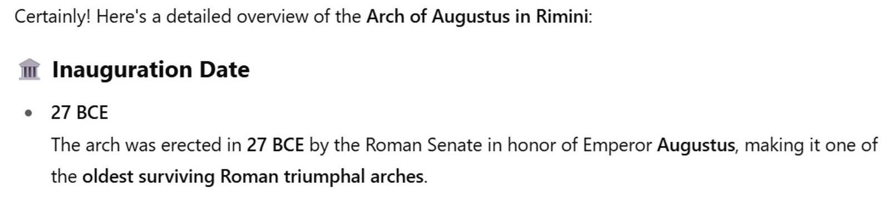 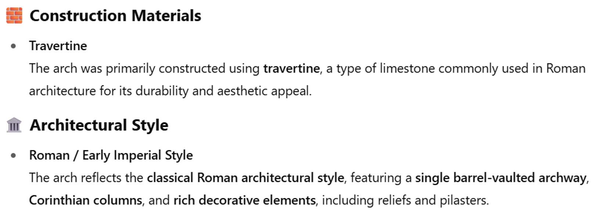 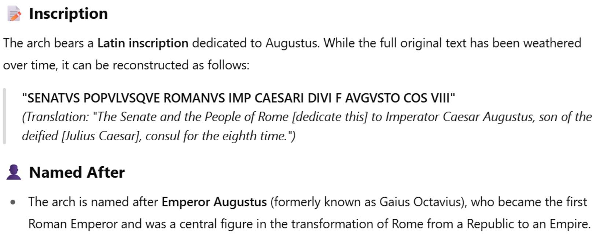
Chat GPT makes confusion between Travertine and Istrian stone which are not the same thing. Travertine in monuments, due to its porosity, is more prone to weathering, staining, and requires greater maintenance and sealing, while Istrian stone, being dense and impermeable, offers superior resistance to water, frost, and salt, making it exceptionally durable for exposed monumental structures. ChatGPT also doesn't know precisely the inscription on the Arc, it has it incomplete.
Deep Seek's answer
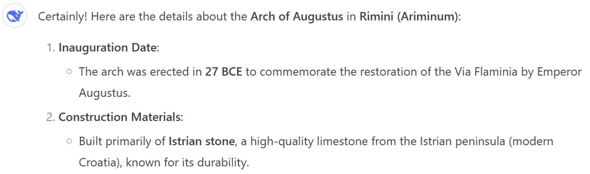 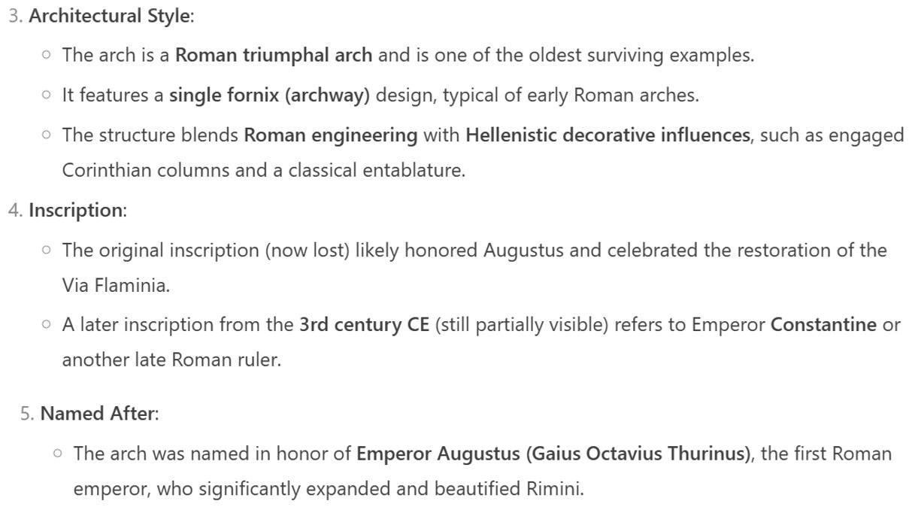
On the other hand, Deep Seek knows that it is built in Istrian stone but is mistaken on the inscription as well, it says that the original inscription is lost while this is actually false.
Gemini's answer
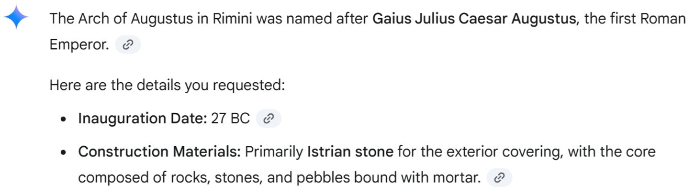 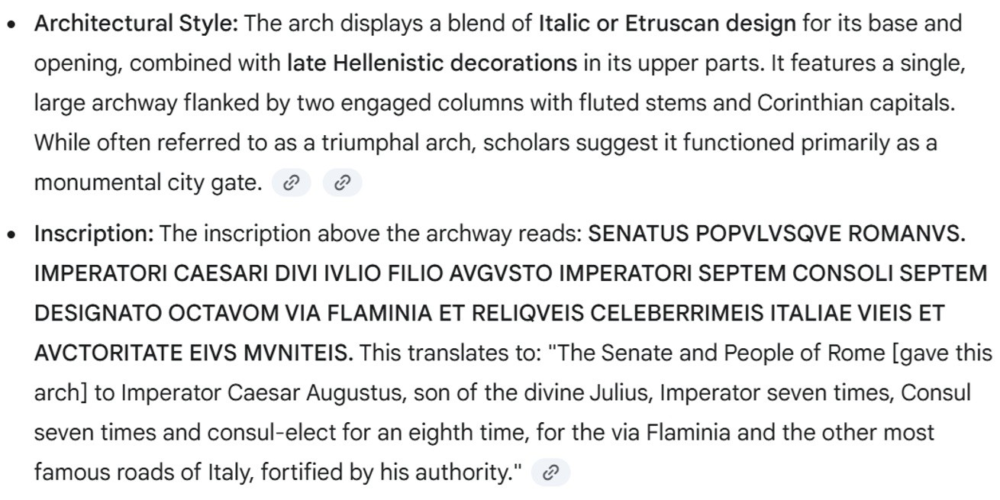
Gemini is the most accurate one in its answers as it even has the right inscription and links the sources immediately after each information it provides. This makes it easier to retrieve them in the right websites.
Some researches on reliable sources confirmed that the inauguration date of the Arch of Augustus is 27 BC, the monument was erected to honor Emperor Octavian Augustus and the style is that of classical Roman architecture. It is made of Istrian stone and the inscription reads: SENATVS · POPVLVS · COS · SEPT · DESIGNAT · OCTAVOM· CELEBERRIMEIS· ITALIAE· VIEIS · CONSILIO.
Sources: Website of the Rimini city hall, Website of Rimini tourism and the book by Pasini Piergiorgio Guida per Rimini, Maggioli Editore , Rimini, 1989.
→ This implies that it is always important to verify information coming from LLMs on reliable sources, even for factual data like this.
Few-shots chain-of-thought prompt
I then decided to add this information in Wikidata through a CONSTRUCT query. Therefore, I ask ChatGPT and Deep Seek to help me create a CONSTRUCT query through a few-shots chain-of-thought prompt.
The question was formulated as it follows, giving as examples two queries made to create new triples for the ArCo knowledge graph :
"Hi, I need to enrich the entity wd:Q1072853 (Arch of Augustus in Rimini) in the Wikidata knowledge graph with some new triples. I noticed that in the page various things are missing such as:
- the inauguration date;
- the eponym;
- the architectural style;
- the material;
- the website;
- the inscription on the arc.
Can you create a CONSTRUCT query for Wikidata with all this information, following these examples taken from some queries made to the ArCo knowledge graph?:
PREFIX rdfs: <http://www.w3.org/2000/01/rdf-schema#>
PREFIX clv: <https://w3id.org/italia/onto/CLV/>
PREFIX cis: <http://dati.beniculturali.it/cis/>
PREFIX a-cd: <https://w3id.org/arco/ontology/context-description/>
PREFIX l0: <https://w3id.org/italia/onto/l0/>
CONSTRUCT {
?place a cis:GeographicalFeature; l0:name "Firenze" .
?event a cis:CulturalEvent; clv:hasSpatialCoverage ?place; l0:name ?eventName;
cis:involvesCulturalEntity ?culturalProperty .
?culturalProperty a-cd:hasAuthor ?author; l0:name ?title .
?author l0:name ?authorName
}
WHERE {
?place a cis:GeographicalFeature; rdfs:label "Firenze" .
?event a cis:CulturalEvent; clv:hasSpatialCoverage ?place; rdfs:label ?eventName;
cis:involvesCulturalEntity ?culturalProperty .
?culturalProperty a-cd:hasAuthor ?author; rdfs:label ?title .
?author rdfs:label ?authorName
FILTER(REGEX(?authorName, "andrea del Castagno", "i"))
}
PREFIX rdfs: <http://www.w3.org/2000/01/rdf-schema#>
PREFIX clv: <https://w3id.org/italia/onto/CLV/>
PREFIX cis: <http://dati.beniculturali.it/cis/>
PREFIX a-cd: <https://w3id.org/arco/ontology/context-description/>
PREFIX l0: <https://w3id.org/italia/onto/l0/>
CONSTRUCT {
?author cis:exhibitedAt ?event .
}
WHERE {
?event a cis:CulturalEvent;
cis:involvesCulturalEntity ?culturalProperty .
?culturalProperty a arco:HistoricOrArtisticProperty;
a-cd:hasAuthor ?author;
rdfs:label ?title .
?author rdfs:label ?authorName .
FILTER(REGEX(?authorName, "andrea del Castagno", "i"))
}
Let's think step by step!"
Chat GPT's answer
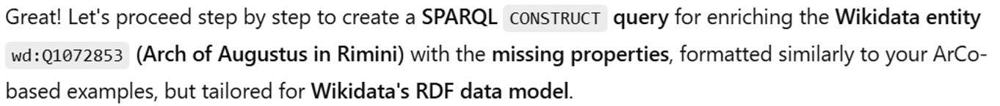 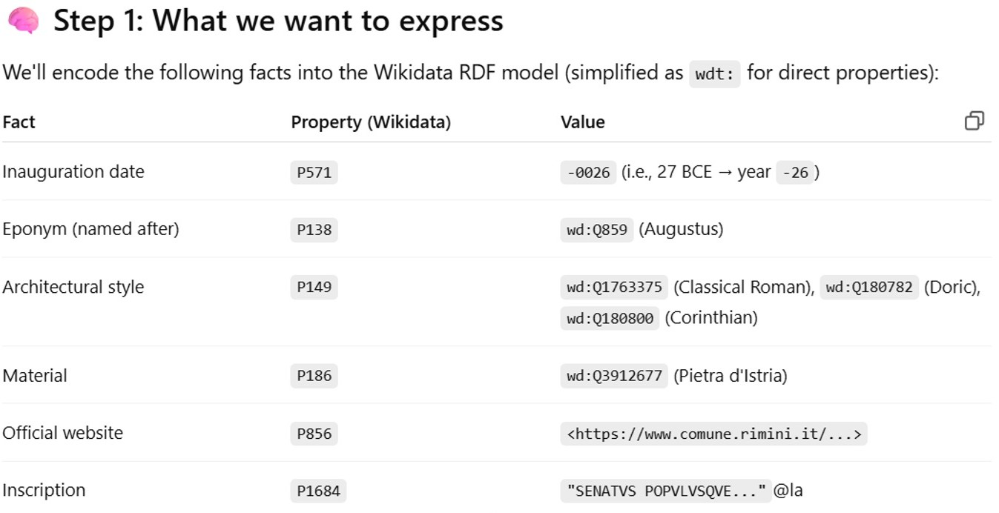
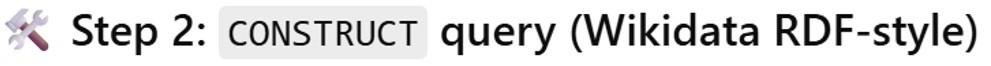
PREFIX wd: <http://www.wikidata.org/entity/>
PREFIX wdt: <http://www.wikidata.org/prop/direct/>
PREFIX rdfs: <http://www.w3.org/2000/01/rdf-schema#>
PREFIX xsd: <http://www.w3.org/2001/XMLSchema#>
CONSTRUCT {
wd:Q1072853 wdt:P571 "-0026-01-01T00:00:00Z"^^xsd:dateTime ;
wdt:P138 wd:Q859 wd:Q1405 ;
wdt:P149 wd:Q1763375, wd:Q180782, wd:Q180800 ; wd:Q223750, wd:Q192664, wd:Q54124 ;
wdt:P186 wd:Q3912677 wd:Q1401767 ;
wdt:P856 <https://www.comune.rimini.it/vivere-il-comune/luoghi/area-archeologica/arco-daugusto> ;
wdt:P1684 "SENATVS POPVLVSQVE ROMANVS IMP CAESARI DIVI F AVGVSTO COS VIII TRIBVNIC POTEST XX"@la .
wd:Q859 wd:Q1405 ; rdfs:label "Ottaviano Augusto"@it .
wd:Q1763375 wd:Q223750 rdfs:label "Architettura romana classica"@it .
wd:Q180782 wd:Q192664 rdfs:label "Ordine dorico"@it .
wd:Q180800 wd:Q54124 rdfs:label "Ordine corinzio"@it .
wd:Q3912677 wd:Q1401767 rdfs:label "Pietra d'Istria"@it .
}
WHERE {
BIND(wd:Q1072853 AS ?monument)
}

In this case the properties are fine, but from the results of the query we can easily see that the IDs for Augustus, Istrian stone, and the architectural style are wrong and need to be corrected with (Augustus: Q1405, Istrian stone: Q1401767, Ancient Roman architectural style: Q223750). Therefore I manually corrected the query.
Additionally, the WHERE section was not filled out correctly like in the example queries I provided.
Deep Seek's answer
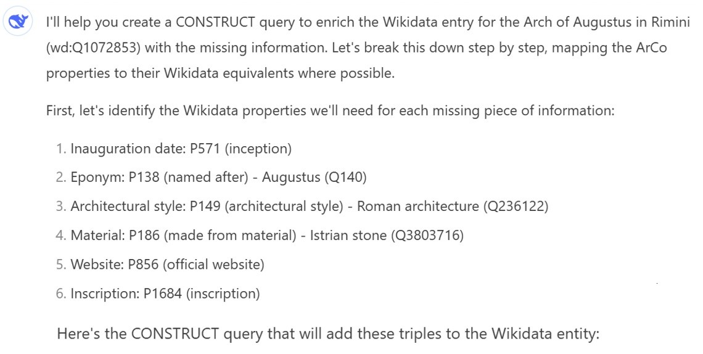
PREFIX wd: <http://www.wikidata.org/entity/>
PREFIX wdt: <http://www.wikidata.org/prop/direct/>
CONSTRUCT {
wd:Q1072853 wdt:P571 "27 BCE"^^xsd:gYear ; # inception date (27 BCE)
wdt:P138 wd:Q140 wd:Q1405 ; # named after (Augustus)
wdt:P149 wd:Q236122 ; wd:Q223750; # architectural style (Roman architecture)
wdt:P186 wd:Q3803716 wd:Q1401767; # made from material (Istrian stone)
wdt:P856 <https://www.riminiturismo.it/visita/arco-d-augusto> ; # official website
wdt:P1684 "IMP?CAESAR?DIVI?FILIVS?AVGVSTVS?PONTIFEX?MAXIMVS?IMP?XIIII?TRIBVNIC?POTEST?XVII?P?P?"@la . # inscription
}
WHERE {
# We don't need to match any existing data since we're adding new information
SERVICE wikibase:label { bd:serviceParam wikibase:language "[AUTO_LANGUAGE],en". }
}
Here the problems are the same, the objects are not correct. Even if in the comments Deep Seek identified the Istrian stone, the Roman architecture etc... in the results all these objects were changed with some incoherent entities! Therefore, I need to modify the query to generate meaningful triples.
Gemini's answer
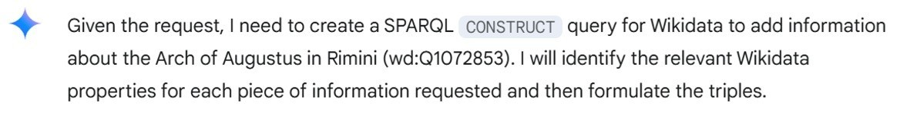 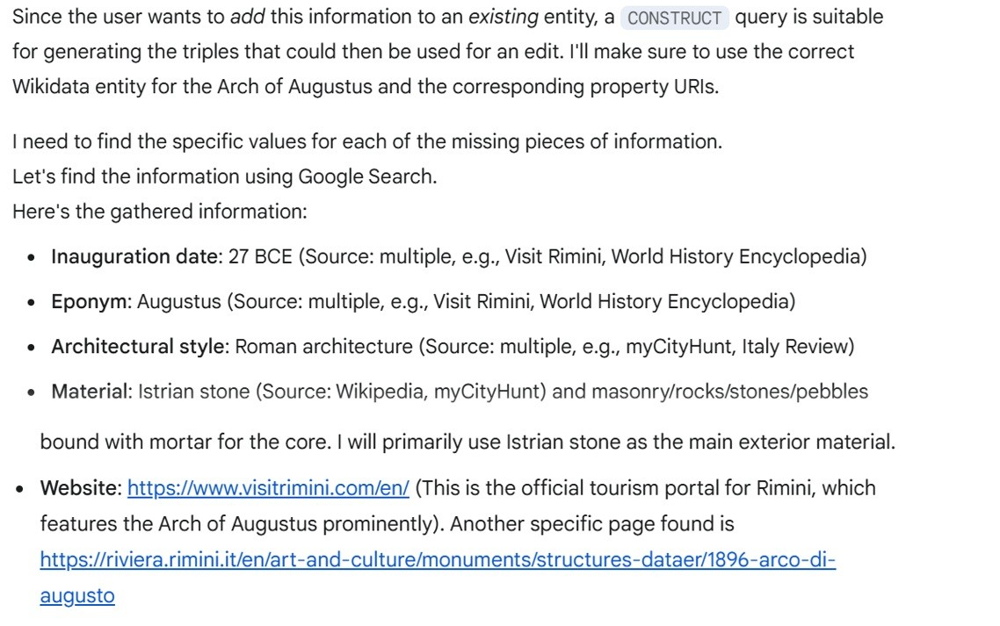
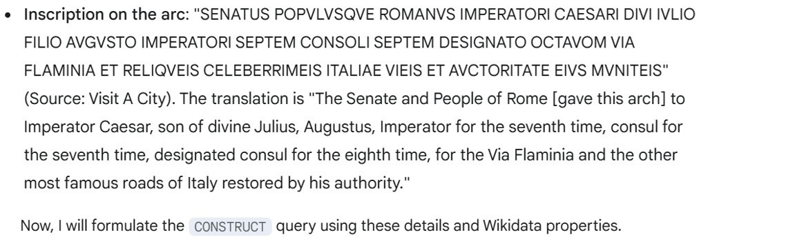
PREFIX wd: <http://www.wikidata.org/entity/>
PREFIX wdt: <http://www.wikidata.org/prop/direct/>
PREFIX xsd: <http://www.w3.org/2001/XMLSchema#>
CONSTRUCT {
wd:Q1072853 wdt:P571 "0027-01-01T00:00:00Z"^^xsd:dateTime ;
wdt:P138 wd:Q1405 ;
wdt:P149 wd:Q12502; wd:Q223750;
wdt:P186 wd:Q375253 wd:Q1401767;
wdt:P856 <https://www.visitrimini.com/en/> ;
wdt:P1684 "SENATUS POPVLVSQVE ROMANUS IMPERATORI CAESARI DIVI IVLIO FILIO AVGVSTO IMPERATORI SEPTEM CONSOLI SEPTEM DESIGNATO OCTAVOM VIA FLAMINIA ET RELIQVEIS CELEBERRIMEIS ITALIAE VIEIS ET AVCTORITATE EIVS MVNITEIS"@la .
}
WHERE {
BIND(wd:Q1072853 AS ?archOfAugustusRimini)
BIND(wd:Q1405 AS ?augustus) # Augustus
BIND(wd:Q12502 AS ?romanArchitecture) # Roman architecture
BIND(wd:Q375253 AS ?istrianStone) # Istrian stone
}
With Gemini as well the problems are the same: the objects identified are not correct even if the properties are. Interestingly, it doesn't confuse the ID of Augustus as the other two chatbots. I manually corrected the query.
Zero-shots chain-of-thought prompt
While reading the Wikipedia English page about the Arch of Augustus I had found in the DESCRIBE query, I saw that the Arch had suffered damage in 1916 due to an earthquake and this was missing from the KG.
I need to add this fact together with some more specific information about the parts damaged (the merlons), so the triple must be specified with these qualities. Therefore I asked this with a zero-shots chain of thought.
Sources: Pasini Piergiorgio, Guida per Rimini, Maggioli Editore, Rimini, 1989.
"Hi, can you help me enrich the Wikidata entity of the Arch of Augustus in Rimini (Q1072853) using the CONSTRUCT function of SPARQL? I want to add that it reported some damage in its merlons in 1916 when an earthquake occurred. Let's think step-by-step."
ChatGPT's answer
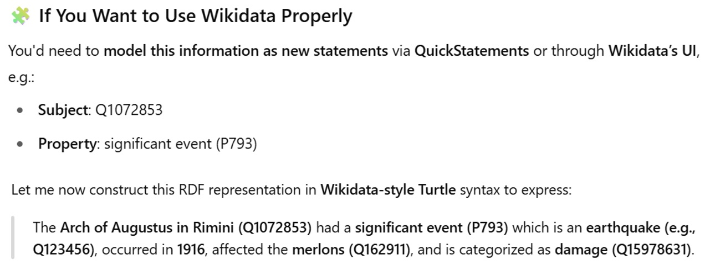
PREFIX wd: <http://www.wikidata.org/entity/>
PREFIX p: <http://www.wikidata.org/prop/>
PREFIX ps: <http://www.wikidata.org/prop/statement/>
PREFIX pq: <http://www.wikidata.org/prop/qualifier/>
PREFIX xsd: <http://www.w3.org/2001/XMLSchema#>
CONSTRUCT {
wd:Q1072853 p:P793 [
ps:P793 wd:Q123456; wd:Q99225387 ; # earthquake event
pq:P585 "1916-00-00T00:00:00Z"^^xsd:dateTime ;
pq:P527 wd:Q162911; wd:Q23419 ;
] .
}
WHERE {
# No input pattern needed since we are hardcoding the data
}
The event affecting the Arch is modeled as a blank node with the statement (wd:Q1072853 ps:P793 wd:Q123456 ) and some qualifiers (pq:P585 for the date and pq:P527 to indicate that the event involves the merlons). However, the query contains incorrect IDs: the significant event is an earthquake damage (wd:Q99225387) and the merlons (wd:Q23419) were affected. After correcting the IDs, the results were ok.
Gemini's answer
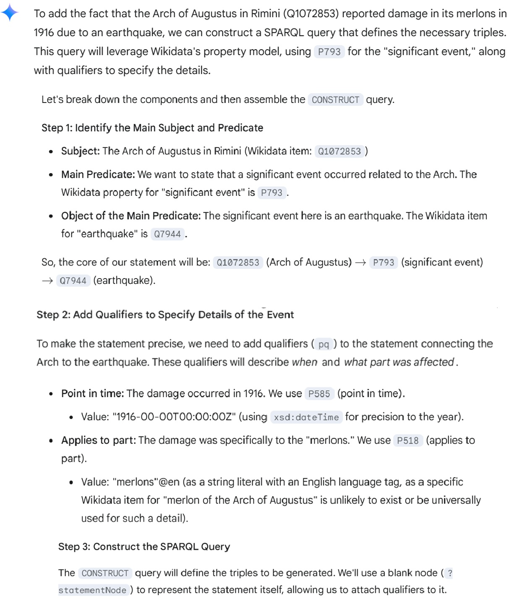
PREFIX wd: <http://www.wikidata.org/entity/>
PREFIX wdt: <http://www.wikidata.org/prop/direct/>
PREFIX p: <http://www.wikidata.org/prop/>
PREFIX ps: <http://www.wikidata.org/prop/statement/>
PREFIX pq: <http://www.wikidata.org/prop/qualifier/>
PREFIX xsd: <http://www.w3.org/2001/XMLSchema#>
CONSTRUCT {
# Declare the main statement: Arch of Augustus had a significant event
wd:Q1072853 p:P793 ?statementNode .
# Specify the object of the main statement: the significant event was an earthquake
?statementNode ps:P793 wd:Q7944 .
# Add qualifiers to describe the event in detail:
# 1. Point in time (when the event affected the Arch)
?statementNode pq:P585 "1916-00-00T00:00:00Z"^^xsd:dateTime .
# 2. Applies to part (which part of the Arch was affected)
?statementNode pq:P518 "merlons"@en .
}
WHERE {
# This clause creates a unique blank node for the statement.
# In an actual INSERT DATA query, you would simply list the triples.
BIND(BNODE() AS ?statementNode)
}
Gemini gives more explanation on the query it proposes. For the merlons it uses the property P518, which is "applies to part", which is more adequate than P527, which is "has part/consists of", but used a string instead of a ID for merlons, which I found a bit inconsistent.
It also uses the ID (wd:Q7944) which is "earthquake", instead of "earthquake damage" as ChatGPT did, which is more accurate in my opinion for the event I am trying to describe.
I am therefore going to add this in the final CONSTRUCT query.
✅ Correct CONSTRUCT query and triples
In conclusion, I can say that the LLMs help in building the structure for a CONSTRUCT query, but their output should always be verified.
I need to manually modify the CONSTRUCT query in order to have correct triples as a result and for the last part I integrated the positive things from both outputs of ChatGPT and Gemini.
PREFIX wd: <http://www.wikidata.org/entity/>
PREFIX wdt: <http://www.wikidata.org/prop/direct/>
PREFIX xsd: <http://www.w3.org/2001/XMLSchema#>
PREFIX p: <http://www.wikidata.org/prop/>
PREFIX ps: <http://www.wikidata.org/prop/statement/>
PREFIX pq: <http://www.wikidata.org/prop/qualifier/>
CONSTRUCT {
?monument wdt:P571 ?inaugurationdate ; # Inauguration date of the Arch of Augustus
wdt:P138 ?eponym ; # Dedicated to Augustus
wdt:P149 ?architecturalstyle1 ; # Architectural style: the Roman classical architectural style
wdt:P149 ?architecturalstyle2 ; # Doric order
wdt:P149 ?architecturalstyle3 ; # Corinthian order
wdt:P186 ?material; # Material: Istrian stone
wdt:P856 ?site1 ; # Website 1
wdt:P856 ?site2 ; # Website 2
wdt:P1684 ?inscription . # Inscription
?monument p:P793 [
ps:P793 wd:Q99225387 ; # earthquake damage
pq:P585 "1916-00-00T00:00:00Z"^^xsd:dateTime ; # in 1916
pq:P518 wd:Q23419 # merlons were affected
] .
}
WHERE {
BIND(wd:Q1072853 AS ?monument) # ?monument is the Arch of Augustus
BIND("-0026-01-01T00:00:00Z"^^xsd:dateTime AS ?inaugurationdate) # ?inaugurationdate is 27 BC
BIND(wd:Q1405 AS ?eponym) # ?eponym is Augustus
BIND(wd:Q223750 AS ?architecturalstyle1) # ?architecturalstyle1 is the Roman classical architectural style
BIND(wd:Q192664 AS ?architecturalstyle2) # ?architecturalstyle2 is the doric order
BIND(wd:Q54124 AS ?architecturalstyle3) # ?architecturalstyle3 is the corinthian order
BIND(wd:Q1401767 AS ?material) # ?material is the Istrian stone
BIND(<https://www.comune.rimini.it/vivere-il-comune/luoghi/area-archeologica/arco-daugusto> AS ?site1) #?site1 is the website 1
BIND(<https://riminiturismo.it/cosa-vedere/arte-e-cultura/archi-porte-mura-portici/arco-daugusto> AS ?site2) #?site2 is the website 2
BIND("SENATVS POPVLVS COS SEPT DESIGNAT OCTAVOM CELEBERRIMEIS ITALIAE VIEIS CONSILIO" AS ?inscription) # the string is the inscription
}
Here are the final results: